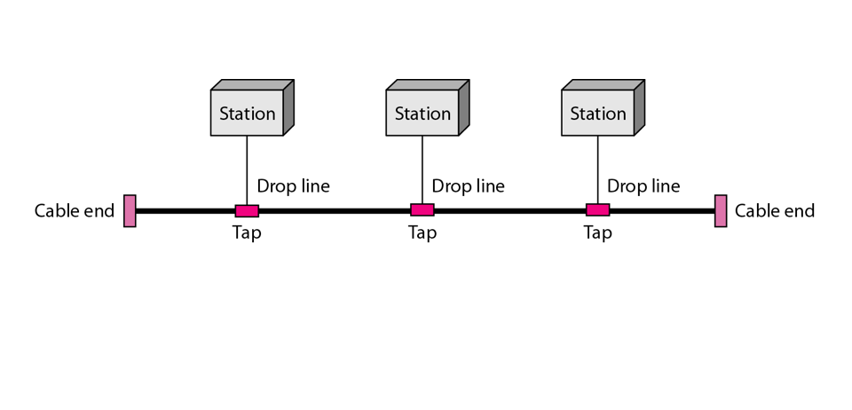
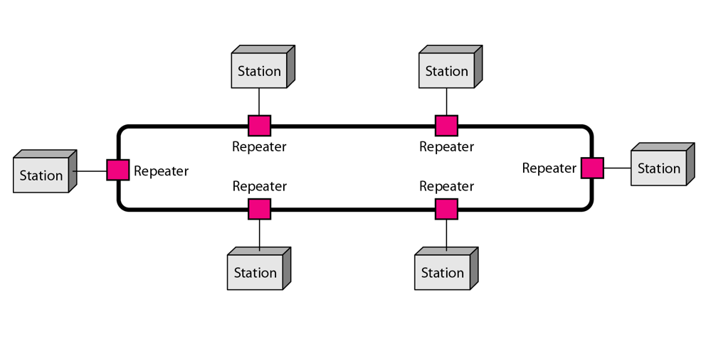
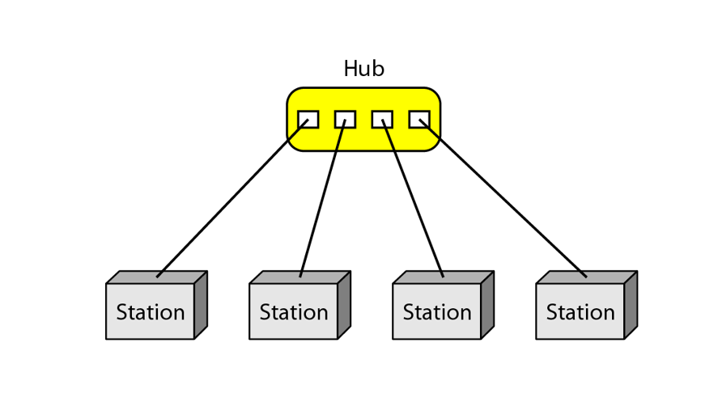
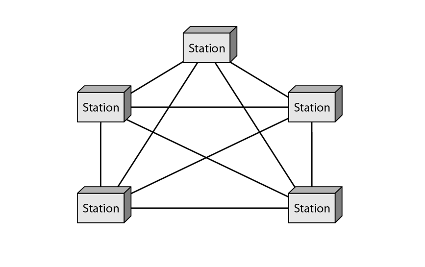
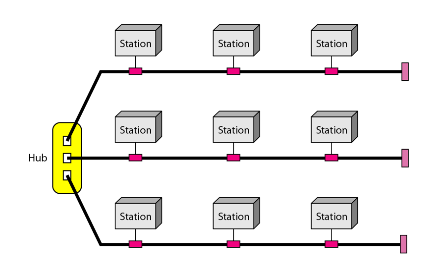

Bus Topology

Bus Topology
Bus Topology: In a bus topology, all devices are connected to a single central cable, known as the bus.
Data sent from one device travels along the bus until it reaches its destination.
Ring Topology

Ring Topology
Ring Topology: In a ring topology, each device is connected to two other devices, forming a circular pathway for data.
Data travels in one direction (or both in a dual ring).
Star Topology

Star Topology
Star Topology: In a star topology, all devices are connected to a central hub or switch. The hub acts as a conduit to transmit data to other devices in the network.
Data is sent from a device to the hub, which then forwards it to the intended recipient.
Mesh Topology

Mesh Topology
Mesh Topology: In a mesh topology, every device is connected to every other device, allowing for multiple pathways for data to travel.
Hybrid Topology

Hybrid Topology
Hybrid Topology: A hybrid topology combines two or more different types of network topologies, such as star, bus, ring, or mesh, to create a customized design.
Network Topology Animation Links
Bus Topology
In a bus topology, all devices are connected to a single central cable, known as the bus.
Ring Topology
In a ring topology, each device is connected to two other devices, forming a circular pathway for data.
Star Topology
In a star topology, all devices are connected to a central hub or switch.
Mesh Topology
In a mesh topology, every device is connected to every other device, allowing for multiple pathways for data to travel.
Hybrid Topology
A hybrid topology combines two or more different types of network topologies.